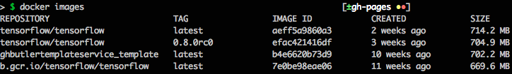
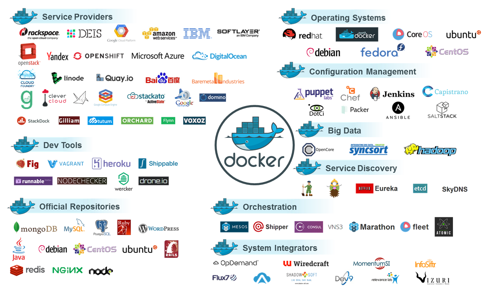

Containerization in Application Development
Agenda
- What is Containerization/Docker?
- How does Containerization work?
- How can I use it?
- Handling
What is Containerization/Docker?
Container vs. Virtualization

Docker Container?
dockerfile
FROM ubuntu:12.04
RUN apt-get update && apt-get install -y python python-pip curl
RUN curl -sSL https://github.com/shykes/helloflask/archive/master.tar.gz | tar -xzv
RUN cd helloflask-master && pip install -r requirements.txt
images (docker build)

But how does it work?

Why is it so popular?
- OpenSource
- Hardware- and platform-agnostic
- Flexibility (e.g. spin up whole integration testing environment on your notebook)
- Efficiency (four to six times the number of server application instances compared to Xen, KVM)
Why is it so popular?
- Perfect for immutable infrastructure
- Security (but not yet as good as BSD jails or real virtualization)
- Take control back over your processes
The Docker Ecosystem
How can I use it?
Dockerfile
FROM python:3.5
# copy SAP specific certs to make the SSL validation work
ADD certificates /usr/local/share/ca-certificates/
RUN update-ca-certificates
# create directory for app
RUN mkdir /app
# install required python 3.5 libs
COPY requirements.txt /app/
RUN pip3 --proxy proxy.wdf.sap.corp:8080 install -r /app/requirements.txt
# add handler for routes
ADD handler /app/handler
CMD python /app/app.py
EXPOSE 8080
The Base Image
$ sudo debootstrap raring raring > /dev/null
$ sudo tar -C raring -c . | docker import - raring
a29c15f1bf7a
$ docker run raring cat /etc/lsb-release
DISTRIB_ID=Ubuntu
DISTRIB_RELEASE=13.04
DISTRIB_CODENAME=raring
DISTRIB_DESCRIPTION="Ubuntu 13.04"``
Docker Compose
version: '2'
services:
web:
build: .
ports:
- "5000:5000"
volumes:
- .:/code
depends_on:
- redis
redis:
image: redis
Handling
The Terminal Interface
> $ docker pull tensorflow/tensorflow:latest
> $ docker run -p 8888:8888 -p 6006:6006 -it tensorflow/tensorflow:latest
images (docker build)